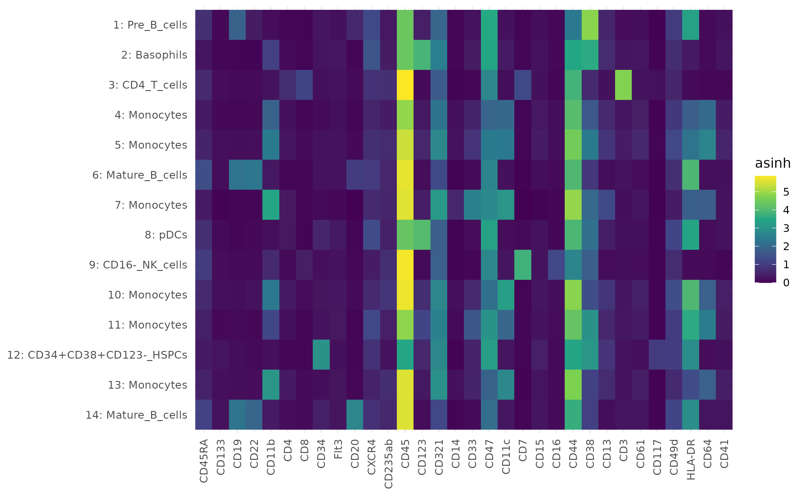
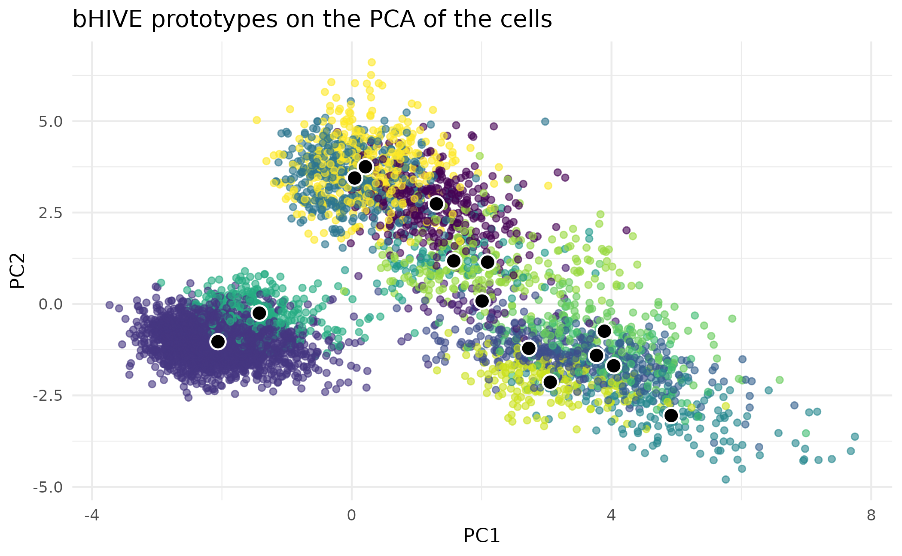
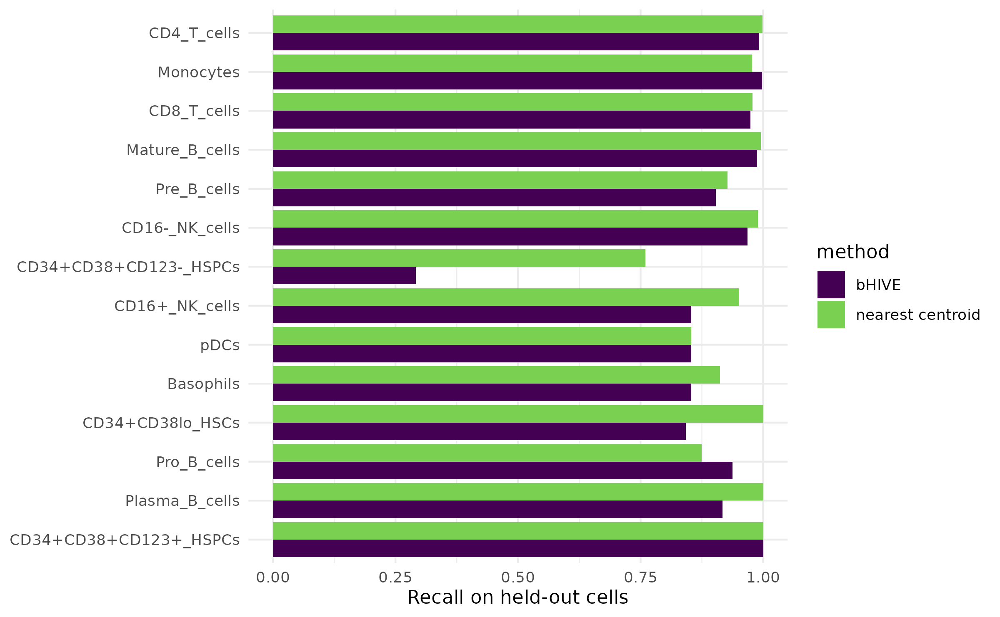

Immune-inspired prototypes for cytometry and single-cell data with bHIVE
Nick Borcherding
Washington University in St. Louis, School of Medicine, St. Louis, MO, USAncborch@gmail.com
2026-10-15
Source:vignettes/bHIVE.Rmd
bHIVE.RmdIntroduction
Cytometry and single-cell RNA-seq measure many markers on many cells. Two questions come up in almost every analysis. Which cell populations are present? And which population does a new cell belong to? Clustering answers the first. Classification, or label transfer from an annotated reference, answers the second.
bHIVE answers both with one model, an artificial immune network. A set of prototypes, called antibodies, evolves the way B cells do in an immune response. Antibodies that bind the data well are cloned, the clones mutate, and near-duplicates are suppressed. What remains is a small set of points in marker space that summarize the cells.
What this gives an analyst:
- Prototypes you can read. Each antibody is a point in the original marker units, so a heatmap of the antibodies reads like a table of population phenotypes.
-
One model for clustering and label transfer. The
same fitted object that clusters a sample can label new cells with
$predict(). -
Rare populations. In supervised mode every class is
seeded with its own antibodies, so a population of a few cells is not
lost. In unsupervised mode
coverageBoostseeds antibodies where coverage is poor. -
A cluster count you choose or let emerge. By
default the number of clusters comes out of the suppression dynamics.
Set
targetKto fix it. -
Composable immune modules. The R6 engine,
AINet, accepts modules for somatic hypermutation, germinal center selection, microenvironment and more. The second vignette,vignette("immune-modules", package = "bHIVE"), covers them.
bHIVE works with Bioconductor data structures. bHIVE()
accepts a SummarizedExperiment or
SingleCellExperiment and stores its labels in
colData(). bHIVEParam() plugs bHIVE into
bluster,
so it also runs through bluster::clusterRows() and
bluster::clusterSweep().
bHIVE does not replace graph-based clustering or FlowSOM. The comparison below shows that a shared-nearest-neighbor graph recovers manually gated populations better on this dataset. bHIVE is a prototype model to inspect and reuse.
Installation
if (!requireNamespace("BiocManager", quietly = TRUE))
install.packages("BiocManager")
BiocManager::install("bHIVE")A mass cytometry dataset
We use bone marrow mass cytometry data from Levine et al. (2015), available through HDCytoData. Each cell was gated by hand into one of 14 populations or left unassigned. The gates give a reference to score clusterings against.
HDCytoData stores cells in rows and markers in columns. Bioconductor
single-cell containers use the opposite orientation, so we transpose. We
keep the 32 lineage markers, take 5,000 gated cells, and apply the usual
asinh(x / 5) transform for mass cytometry.
library(bHIVE)
library(SingleCellExperiment)
library(HDCytoData)
library(bluster)
library(ggplot2)
se <- Levine_32dim_SE()
type_markers <- colData(se)$marker_class == "type"
gated <- which(rowData(se)$population_id != "unassigned")
set.seed(1)
keep <- sample(gated, 5000)
sce <- SingleCellExperiment(
assays = list(exprs = t(asinh(assay(se, "exprs")[keep, type_markers] / 5))),
colData = droplevels(rowData(se)[keep, ]))
colnames(sce) <- paste0("cell", seq_len(ncol(sce)))
sce## class: SingleCellExperiment
## dim: 32 5000
## metadata(0):
## assays(1): exprs
## rownames(32): CD45RA CD133 ... CD64 CD41
## rowData names(0):
## colnames(5000): cell1 cell2 ... cell4999 cell5000
## colData names(2): patient_id population_id
## reducedDimNames(0):
## mainExpName: NULL
## altExpNames(0):##
## CD4_T_cells Monocytes CD8_T_cells
## 1275 1022 936
## Mature_B_cells Pre_B_cells CD16-_NK_cells
## 780 302 187
## CD34+CD38+CD123-_HSPCs CD16+_NK_cells pDCs
## 166 109 71
## Basophils CD34+CD38lo_HSCs Pro_B_cells
## 59 34 25
## Plasma_B_cells CD34+CD38+CD123+_HSPCs
## 20 14The smallest populations have only a few dozen cells in this sample.
Clustering a SingleCellExperiment
bHIVE() clusters the cells (the columns) of a
SingleCellExperiment using an assay, here
exprs, or a reducedDim() embedding through
use.dimred. For scRNA-seq, cluster a PCA embedding rather
than a sparse assay.
Two settings matter for high-dimensional data.
affinityParams = list(alpha = "auto") sets the bandwidth of
the Gaussian affinity from the data. A fixed bandwidth of 1 makes almost
every affinity zero in 32 dimensions. targetK asks for a
fixed number of clusters, here the 14 gated populations.
set.seed(42)
sce <- bHIVE(sce, assay.type = "exprs", targetK = 14,
affinityParams = list(alpha = "auto"),
maxIter = 20, verbose = FALSE)
table(sce$bHIVE)##
## 1 2 3 4 5 6 7 8 9 10 11 12 13 14
## 332 57 2211 197 242 391 134 83 296 123 143 214 183 394
ari_42 <- pairwiseRand(sce$population_id, sce$bHIVE, mode = "index")
ari_42## [1] 0.5428569The labels are in colData(sce)$bHIVE. The full result,
including the fitted model, is in metadata(sce)$bHIVE. The
last line is the adjusted Rand index (ARI) against the manual gates. An
ARI of 1 means perfect agreement, and 0 means chance. This run reaches
0.54. The comparison below shows how much that changes with the random
seed.
Reading the prototypes
Each cluster has one prototype in marker space. A heatmap of the prototypes shows each cluster’s phenotype. We label each cluster with the gated population most of its cells came from.
res <- metadata(sce)$bHIVE
protos <- res$antibodies_unscaled
majority <- tapply(as.character(sce$population_id), sce$bHIVE,
function(p) names(which.max(table(p))))
rownames(protos) <- paste0(seq_len(nrow(protos)), ": ", majority)
long <- data.frame(
cluster = factor(rep(rownames(protos), ncol(protos)),
levels = rev(rownames(protos))),
marker = factor(rep(colnames(protos), each = nrow(protos)),
levels = colnames(protos)),
value = as.vector(protos))
ggplot(long, aes(marker, cluster, fill = value)) +
geom_tile() +
scale_fill_viridis_c(name = "asinh") +
labs(x = NULL, y = NULL) +
theme_minimal() +
theme(axis.text.x = element_text(angle = 90, hjust = 1, vjust = 0.5))
Reading the rows shows what a run separates and what it merges. A population on more than one row was split. This run splits Mature_B_cells, Monocytes. A population with no row of its own was merged into its neighbors. Here that is CD16+_NK_cells, CD34+CD38+CD123+_HSPCs, CD34+CD38lo_HSCs, CD8_T_cells, Plasma_B_cells, Pro_B_cells. That explains most of the gap between this run and the gates.
Plotting the cells with their prototypes
visualizeHIVE() fits a PCA to the cells and projects the
prototypes into the same coordinates.
X <- t(assay(sce, "exprs"))
visualizeHIVE(res, X = X, title = "bHIVE prototypes on the PCA of the cells")
bHIVE through bluster
bHIVEParam() describes a bHIVE run for bluster.
It works anywhere a BlusterParam does.
param <- bHIVEParam(targetK = 14, affinityParams = list(alpha = "auto"),
maxIter = 20)
param## class: bHIVEParam
## nAntibodies: [default]
## beta: [default]
## epsilon: [default]
## maxIter: 20
## k: [default]
## affinityFunc: [default]
## distFunc: [default]
## initMethod: [default]
## scale: [default]
## targetK: 14
## epsilonQuantile: [default]
## affinityParams(1): alpha
## extra(0):
set.seed(42)
clusters <- clusterRows(X, param)
table(clusters)## clusters
## 1 2 3 4 5 6 7 8 9 10 11 12 13 14
## 332 57 2211 197 242 391 134 83 296 123 143 214 183 394The rows of X are the cells of sce, so the
labels go straight into colData().
## [1] 14bluster::clusterSweep() varies any setting of the
parameter object. Here it tries three cluster counts.
set.seed(42)
sweep <- clusterSweep(X, bHIVEParam(affinityParams = list(alpha = "auto"),
maxIter = 10),
targetK = c(8, 14, 20))
vapply(as.list(sweep$clusters),
function(cl) pairwiseRand(sce$population_id, cl, mode = "index"),
numeric(1))## targetK.8 targetK.14 targetK.20
## 0.7106187 0.8473659 0.8432034Comparison with FlowSOM and bluster methods
We compare bHIVE with three methods used for cytometry and single-cell data:
- FlowSOM builds a self-organizing map and merges its nodes into metaclusters. It is the standard prototype method for cytometry. We ask for 14 metaclusters.
- k-means with 14 centers, through
bluster::KmeansParam(). - A shared-nearest-neighbor graph with Louvain community detection,
through
bluster::SNNGraphParam(). This is the usual default for single-cell data. It picks its own number of clusters.
bHIVE depends on its random seed, so we run it three times.
truth <- sce$population_id
timed <- function(expr) {
start <- proc.time()[["elapsed"]]
clusters <- expr
list(clusters = clusters, seconds = proc.time()[["elapsed"]] - start)
}
runs <- list(
"bHIVE, seed 1" = timed({ set.seed(1); clusterRows(X, param) }),
"bHIVE, seed 2" = timed({ set.seed(2); clusterRows(X, param) }),
"bHIVE, seed 3" = timed({ set.seed(3); clusterRows(X, param) }),
"FlowSOM" = timed(FlowSOM::GetMetaclusters(FlowSOM::FlowSOM(
X, compensate = FALSE, transform = FALSE, scale = FALSE,
colsToUse = seq_len(ncol(X)), nClus = 14, seed = 1))),
"k-means" = timed({ set.seed(1); clusterRows(X, KmeansParam(centers = 14)) }),
"SNN graph + Louvain" = timed(clusterRows(
X, SNNGraphParam(k = 15, cluster.fun = "louvain"))))
comparison <- data.frame(
method = names(runs),
clusters = vapply(runs, function(r) length(unique(r$clusters)), integer(1)),
ARI = vapply(runs, function(r)
pairwiseRand(truth, r$clusters, mode = "index"), numeric(1)),
seconds = vapply(runs, `[[`, numeric(1), "seconds"),
row.names = NULL)
knitr::kable(comparison, digits = c(0, 0, 3, 1))| method | clusters | ARI | seconds |
|---|---|---|---|
| bHIVE, seed 1 | 14 | 0.805 | 0.9 |
| bHIVE, seed 2 | 14 | 0.869 | 0.9 |
| bHIVE, seed 3 | 14 | 0.967 | 1.0 |
| FlowSOM | 14 | 0.897 | 4.4 |
| k-means | 14 | 0.583 | 0.0 |
| SNN graph + Louvain | 8 | 0.971 | 0.4 |
The graph-based method reaches an ARI of 0.97 with only 8 clusters. ARI is dominated by the large populations, so merging a few small ones costs little. FlowSOM reaches 0.90 and k-means 0.58. Across the three seeds here and the run above, bHIVE ranges from 0.54 to 0.97. A single bHIVE run can match the graph method or fall well below FlowSOM.
That seed dependence is the main practical difference. If the goal is
one stable partition of a dataset, FlowSOM or a graph-based method is
the safer choice. With bHIVE, run several seeds and compare them, for
example with bluster::pairwiseRand(). The
ConvergentSelector module keeps the antibodies that recur
across runs.
FlowSOM also builds prototypes, its map nodes, and can map new samples onto them. So prototypes alone are not what sets bHIVE apart. The differences are how bHIVE learns them, by selection, mutation and suppression rather than on a fixed grid, and that the same model also learns from labels. The next section shows that.
Label transfer to new cells
Label transfer trains a classifier on annotated cells and applies it
to new ones. We train bHIVE on half of the gated cells and predict the
other half. For classification, bHIVE seeds every class with at least
minPerClass antibodies (default 5), so rare populations get
their own antibodies.
set.seed(2)
train <- sample(ncol(sce), ncol(sce) / 2)
test <- setdiff(seq_len(ncol(sce)), train)
set.seed(3)
ref <- bHIVE(sce[, train], y = "population_id", assay.type = "exprs",
nAntibodies = 150, maxIter = 20, verbose = FALSE)
model <- metadata(ref)$bHIVE$model
predicted <- model$predict(X[test, ])As a baseline we use the nearest class centroid. Each population is one mean vector, and each test cell takes the label of the closest mean.
centroids <- apply(X[train, ], 2, function(v) tapply(v, truth[train], mean))
dist2 <- vapply(seq_len(nrow(centroids)), function(j)
colSums((t(X[test, ]) - centroids[j, ])^2), numeric(length(test)))
baseline <- rownames(centroids)[max.col(-dist2)]
score <- function(p) {
hit <- p == truth[test]
c(accuracy = mean(hit), balanced_accuracy = mean(tapply(hit, truth[test], mean)))
}
knitr::kable(rbind(bHIVE = score(predicted),
"nearest centroid" = score(baseline)), digits = 3)| accuracy | balanced_accuracy | |
|---|---|---|
| bHIVE | 0.952 | 0.884 |
| nearest centroid | 0.973 | 0.944 |
Balanced accuracy averages the recall of each population, so rare populations count as much as common ones.
recall <- function(p) tapply(p == truth[test], truth[test], mean)
per_pop <- data.frame(
population = rep(levels(truth), 2),
method = rep(c("bHIVE", "nearest centroid"), each = nlevels(truth)),
recall = c(recall(predicted), recall(baseline)))
per_pop$population <- factor(per_pop$population,
levels = names(sort(table(truth))))
ggplot(per_pop, aes(population, recall, fill = method)) +
geom_col(position = "dodge") +
coord_flip() +
scale_fill_viridis_d(end = 0.8) +
labs(x = NULL, y = "Recall on held-out cells") +
theme_minimal()
The nearest-centroid baseline beats bHIVE here. Its accuracy is 0.97 against 0.95, and its balanced accuracy 0.94 against 0.88. It matches or beats bHIVE on 12 of 14 populations. bHIVE’s per-class seeding keeps every population represented, and its lowest recall is 0.29 for CD34+CD38+CD123-_HSPCs.
The gated populations in this dataset are compact and well separated in marker space, so one mean per population is enough. bHIVE spends several antibodies on each population. That helps when a population is spread out or has more than one mode, which is not the case here. For label transfer on data like these, a simple centroid classifier is the better choice.
The fitted model can label any cells measured on the same panel. The cells the original analysis left unassigned are one example.
unassigned <- which(rowData(se)$population_id == "unassigned")
set.seed(4)
new_cells <- asinh(assay(se, "exprs")[sample(unassigned, 2000),
type_markers] / 5)
head(sort(table(model$predict(new_cells)), decreasing = TRUE))##
## CD4_T_cells Monocytes CD8_T_cells Mature_B_cells Pre_B_cells
## 515 460 337 258 119
## CD16-_NK_cells
## 93These cells were not gated by hand, so these labels have no reference to check them against. Treat them as hypotheses to check against the markers.
The R6 engine and immune modules
bHIVE() is a thin wrapper over the R6 class
AINet. Using AINet directly gives a reusable
model object and access to the immune modules. Here
coverageBoost adds antibodies where the data are covered
worst, before the 14 clusters are formed.
net <- AINet$new(nAntibodies = 40, maxIter = 15, targetK = 14,
coverageBoost = TRUE,
affinityParams = list(alpha = "auto"), verbose = FALSE)
set.seed(5)
net$fit(X)
net## <AINet>
## Repertoire: 52 antibodies x 32 features
## Task: clustering
## Iterations: 15
pairwiseRand(truth, net$result$assignments, mode = "index")## [1] 0.604857AINet also accepts modules for somatic hypermutation
(SHMEngine), idiotypic regulation
(IdiotypicNetwork), germinal center selection
(GerminalCenter), microenvironment-dependent mutation
(Microenvironment), V(D)J initialization
(VDJLibrary), two-signal activation
(ActivationGate), memory (MemoryPool) and
isotype switching (ClassSwitcher). The second vignette
demonstrates each one:
vignette("immune-modules", package = "bHIVE")Other tools in the package
-
honeycombHIVE()stacks bHIVE layers. Each layer clusters the prototypes of the layer below, which gives a hierarchy of populations. -
swarmbHIVE()runs a grid search over any bHIVE setting and scores each run with an internal clustering index or a classification metric. -
bHIVEmodelandhoneycombHIVEmodelare custom models for caret, for cross-validated tuning of bHIVE classifiers.
set.seed(6)
layers <- honeycombHIVE(X, task = "clustering", layers = 2, nAntibodies = 40,
maxIter = 10, affinityParams = list(alpha = "auto"),
verbose = FALSE)
vapply(layers, function(l) nrow(l$prototypes), integer(1))## [1] 28 14
set.seed(7)
tuned <- swarmbHIVE(X, task = "clustering",
grid = data.frame(targetK = c(10, 14, 20)),
metric = "davies_bouldin", maxIter = 10, verbose = FALSE)
tuned$results## targetK metric_value
## 1 10 1.702019
## 2 14 1.815448
## 3 20 1.712231Session information
## R version 4.6.1 (2026-06-24)
## Platform: x86_64-pc-linux-gnu
## Running under: Ubuntu 24.04.5 LTS
##
## Matrix products: default
## BLAS: /usr/lib/x86_64-linux-gnu/openblas-pthread/libblas.so.3
## LAPACK: /usr/lib/x86_64-linux-gnu/openblas-pthread/libopenblasp-r0.3.26.so; LAPACK version 3.12.0
##
## locale:
## [1] LC_CTYPE=C.UTF-8 LC_NUMERIC=C LC_TIME=C.UTF-8
## [4] LC_COLLATE=C.UTF-8 LC_MONETARY=C.UTF-8 LC_MESSAGES=C.UTF-8
## [7] LC_PAPER=C.UTF-8 LC_NAME=C LC_ADDRESS=C
## [10] LC_TELEPHONE=C LC_MEASUREMENT=C.UTF-8 LC_IDENTIFICATION=C
##
## time zone: UTC
## tzcode source: system (glibc)
##
## attached base packages:
## [1] stats4 stats graphics grDevices utils datasets methods
## [8] base
##
## other attached packages:
## [1] ggplot2_4.0.3 bluster_1.22.0
## [3] HDCytoData_1.32.1 flowCore_2.24.0
## [5] ExperimentHub_3.2.2 AnnotationHub_4.2.2
## [7] BiocFileCache_3.2.0 dbplyr_2.6.0
## [9] SingleCellExperiment_1.34.0 SummarizedExperiment_1.42.0
## [11] Biobase_2.72.0 GenomicRanges_1.64.0
## [13] Seqinfo_1.2.0 IRanges_2.46.0
## [15] S4Vectors_0.50.3 BiocGenerics_0.58.1
## [17] generics_0.1.4 MatrixGenerics_1.24.0
## [19] matrixStats_1.5.0 bHIVE_0.99.7
## [21] BiocStyle_2.40.0
##
## loaded via a namespace (and not attached):
## [1] DBI_1.3.0 httr2_1.3.0
## [3] rlang_1.3.0 magrittr_2.0.5
## [5] otel_0.2.0 compiler_4.6.1
## [7] RSQLite_3.53.3 png_0.1-9
## [9] systemfonts_1.3.2 vctrs_0.7.3
## [11] pkgconfig_2.0.3 crayon_1.5.3
## [13] fastmap_1.2.0 backports_1.5.1
## [15] XVector_0.52.0 labeling_0.4.3
## [17] rmarkdown_2.32 ragg_1.5.2
## [19] purrr_1.2.2 bit_4.6.0
## [21] xfun_0.61 cachem_1.1.0
## [23] jsonlite_2.0.0 blob_1.3.0
## [25] DelayedArray_0.38.2 tweenr_2.0.3
## [27] BiocParallel_1.46.0 broom_1.0.13
## [29] clusterCrit_1.3.0 parallel_4.6.1
## [31] cluster_2.1.8.2 R6_2.6.1
## [33] bslib_0.12.0 RColorBrewer_1.1-3
## [35] car_3.1-5 jquerylib_0.1.4
## [37] Rcpp_1.1.2 bookdown_0.48
## [39] knitr_1.52 Matrix_1.7-5
## [41] igraph_2.3.4 tidyselect_1.2.1
## [43] abind_1.4-8 yaml_2.3.12
## [45] codetools_0.2-20 curl_8.1.0
## [47] lattice_0.22-9 tibble_3.3.1
## [49] withr_3.0.3 KEGGREST_1.52.2
## [51] S7_0.2.2 evaluate_1.0.5
## [53] Rtsne_0.17 desc_1.4.3
## [55] polyclip_1.10-7 ConsensusClusterPlus_1.76.0
## [57] Biostrings_2.80.2 ggpubr_1.0.0
## [59] pillar_1.11.1 BiocManager_1.30.27
## [61] filelock_1.0.3 carData_3.0-6
## [63] colorRamps_2.3.4 BiocVersion_3.23.1
## [65] scales_1.4.0 glue_1.8.1
## [67] tools_4.6.1 ggnewscale_0.5.2
## [69] BiocNeighbors_2.6.0 ggsignif_0.6.4
## [71] XML_3.99-0.25 fs_2.1.0
## [73] grid_4.6.1 tidyr_1.3.2
## [75] RProtoBufLib_2.24.0 AnnotationDbi_1.74.0
## [77] ggforce_0.5.0 Formula_1.2-6
## [79] cli_3.6.6 rappdirs_0.3.4
## [81] textshaping_1.0.5 cytolib_2.24.0
## [83] S4Arrays_1.12.1 viridisLite_0.4.3
## [85] dplyr_1.2.1 gtable_0.3.6
## [87] rstatix_1.1.0 sass_0.4.10
## [89] digest_0.6.39 FlowSOM_2.20.0
## [91] SparseArray_1.12.3 farver_2.1.2
## [93] memoise_2.0.1 htmltools_0.5.9
## [95] pkgdown_2.2.1 lifecycle_1.0.5
## [97] httr_1.4.9 MASS_7.3-65
## [99] bit64_4.8.6